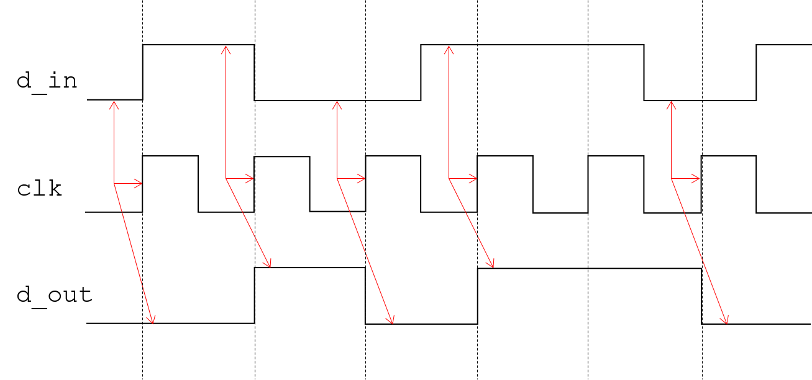
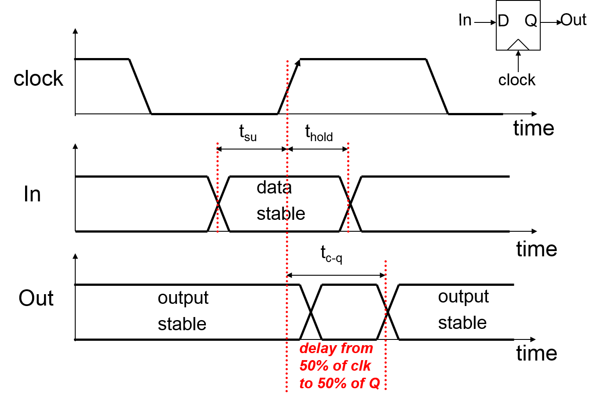
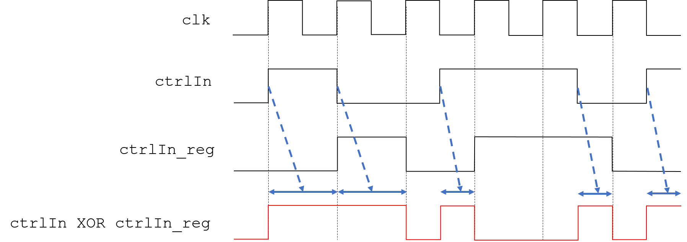
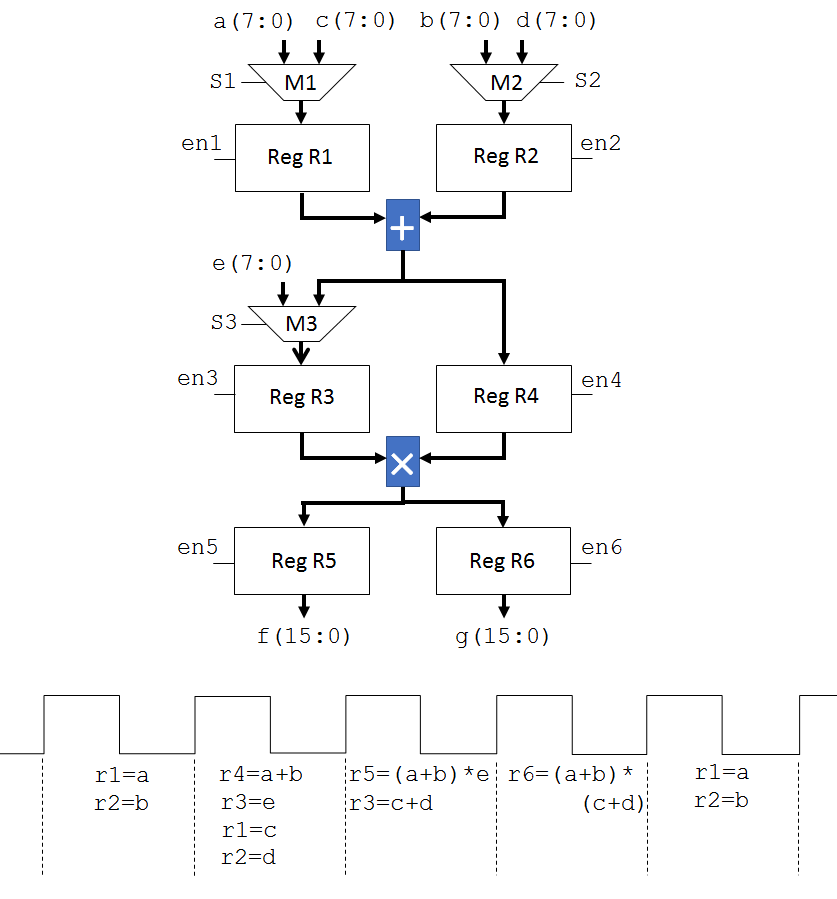

|
|
|
|
The learning objectives for this section are:
Up to this point we have been looking at the various combinational and sequential subcomponents that make a full system. In this section we will look at a complete example, and design practices outlined here should serve as the template for the exercises in the main Assignment.
When you did the example of Pattern Recogniser 1, you would have noticed that data needs to be available some time before the rising clock edge in order for the flip-flop to correctly read in the data. For example, consider the waveforms of Fig. 6.1.

The arrows indicate the relevant data value that is read for a given clock edge, and the corresponding output data value. The key point here is that unless the input data is valid some time before the clock edge, the data will not be correctly read.
How much time is necessary between the input data being valid and the clock edge?
In the implementations so far, any non-zero physical time is adequate, but in reality it needs to be greater than a time called the setup time that is a characteristic of the transistor-level circuit and the fabrication technology. Actually registers (flip-flops) have three fundamental timing metrics: the setup time (tsu), hold time (thold), and clock-to-output propagation delay (tc-q). These timing metrics are illustrated in Fig. 6.2.

The setup time is the time that the data needs to be ready before the clock edge. If this condition is violated, it cannot be guaranteed that the data is read and saved properly. The hold time is the amount of time that the data needs to be held stable after the clock edge. If the data on the in node changes too soon after the clock edge, then the hold time condition is violated, and again it cannot be guaranteed that the data is read and saved properly. Finally, the propagation delay is the amount of time after the clock edge that it takes for the output to be valid with the new data.
In register implementations so far, the setup and hold times and propagation delay were not specified; i.e., they were ideal registers. If we knew the delay of a flip-flop when implemented in our target FPGA, we could potentially model it as an assignment delay to get a more accurate idea of the timing in a simulation. However, then we would have to model the delay of every logic gate to make the timing reasonably accurate. Afterwards, we would have to remove all assignment delays in order to synthesize the code, as clearly assignment delays are not synthesiable. Luckily, this is not necessary as all synthesis tools are able to analyse the timing automatically. After mapping the prescribed logic to hardware, the tool is able to work out all timing paths between registers to check for setup- and hold-time violations.
Any data on system inputs that have to be read synchronously, such as that on x for the pattern recogniser, have to satisfy setup- and hold-time requirements with respect to the clock edge. If you recall, the output of the Mealy machine went high for a short time between essentially because the input changed close to a clock edge. Using the input to directly drive logic that determines the output results in glitches and is not satisfactory for that reason.
Instead, the accepted way to process incoming synchronous data - i.e., data that is valid one setup time before every rising clock edge (or falling clock edge for falling-edge-triggered logic), and holds its value for one hold time after the edge - is to load it into a register, so that the value stays constant for an entire cycle, regardless of whether the input changes or not outside the setup- and hold-time requirements. This can be done by simply connecting x to the input of a flip-flop, and using the output of the flip-flop as the main input signal to the rest of the system. In the example of the pattern recogniser, assume that a signal called x_reg exists, and this is the signal read by all the downstream combinational processes. The following additional code is all that's required.
PROCESS(clk)
BEGIN
IF clk'event AND clk='1' THEN
x_reg <= x;
END IF;
END PROCESS;
In addition to registering inputs to ensure consistent timing behaviour, registering a signal is also a common technique whereby a one-cycle delay is deliberately introduced, which may be useful for various reasons. For example, you may want to monitor transitions in signals, rather than their level, for control purposes. The single phase handshaking protocol used in the main Assignment for instance requires exactly this. Let's look at this in a bit more details.
Assume that ctrlIn is a signal that conveys information based on transitions; i.e., what is signficant is a rising or falling edge of the control signal, rather than whether the signal is high or low. How do you monitor transitions on ctrlIn?
The first idea that might suggest itself is to simply use the 'EVENT attribute on ctrlIn i.e., have a IF ctrlIn'EVENT THEN clause, such as we do for the clock. This would work fine in simulation; however, think about how this can be synthesised. The only digital gate that is edge-triggered is a flip-flop. But connecting ctrlIn to the clock (control) input on a flip-flop is by itself meaningless; what do we connect to the data input, and how do we actually monitor the transition? Further, connecting anything other than the clock to the control input of a flip-flop is fraught with danger, as we have no control over the delay from the input pin to the input of the flip-flop. The clock is a very special signal, and the clock net is routed over the entire chip with special techniques to ensure that its latency is minimised and balanced over the entire chip.
Instead, a simple and clever way to translate a signal edge to a signal level, is to take the XOR of the signal whose transitions we are monitoring, and a one-cycle delayed version of it. Consider Fig. 6.3. As can be seen, both low-to-high and high-to-low edges are indicated by the signal at the bottom, with the arrows showing the edge we want to detect, and the corresponding signal high period.

In the implementation of the first pattern recogniser, you most likely defined states based on recognising individual bits in the specified sequence, for example init, first, second etc. If you did indeed adopt such a scheme, you can appreciate that it is not scalable. For example, assume you had to recognise a sequence in a 64 bit word; clearly, it would be very tedious to define a state machine with 64 states, and not the best design regardless of whether or not you employed an HDL for design entry.
In this second example, the specifications are that the serial I/O interface is the same, but the pattern to recognise is a sequence of 15 zeros followed by 17 ones in a 32 bit sequence. When the pattern has been recognised, y should go high for exactly one clock cycle where a clock cycle is made up of a high and low phase with a 50% duty cycle, and go low in the next cycle.
Thus far, the main examples have focused mostly on the controller and implementing it as a finite-state machine. Many digital systems have requirements for performing arithmetic operations on data that are more complex than the simple comparison operations used to check whether the input was a '0' or '1' in the pattern recognition examples. Here we will look at an example that includes arithmetic operators.
When data manipulation is required, the logic is always organised into a datapath, where the data is manipulated, and a controller, whose job it is to sequence the operations in the datapath, such as select certain inputs at certain times within the datapath, and assert signals to read and write I/O. When describing digital functionality in VHDL, the target technology (e.g.: FPGA, ASIC etc.) and synthesis tool dictate the coding style to some extent, but generally, RTL is always written following the same template, with the controller being implemented as a FSM. Certainly you should always follow this style when using Xilinx Vivado for synthesis, as you will be doing throughout the unit.
The specifications for this example is that we need to add and multiply five 8-bit operands a, b, c, d and e, that are available synchronously on five separate 8-bit input ports, where the operands are valid after a positive clock edge. The functionality (i.e., what we want to do to the data) of this data sampler is defined by f and g, where the output is to be presented on two 16-bit output ports:
f <= (a+b)*e;
g <= (a+b)*(c+d);
The interfacing is governed by a synchronous protocol (i.e., the control signals are aligned with respect to the clock). The system has an output signal, outValid, that goes high for one cycle when both f and g are valid. In the cycle following the assertion of outValid, new input data will be read.
There are many ways in which this functionality can be implemented, but let's assume that we have a constraint of one adder and one multiplier for this operation (as they are both area and power intensive components). The data path can be organised as shown in Figure 5.4.

Because we have to use one adder and one multiplier, clearly we have to temporarily store some intermediate data in registers, and reroute those intermediate results to the adder and multiplier inputs in different cycles. The select signals s1, s2 and s3 controlling the MUXs and the enable signals en1, en2, en3, en4 and en5 shown in red that control the registers have to be driven to the correct values in order for the data to be correctly transformed, and their values are very precisely prescribed for any given cycle.
Assume that inputs become available on the data ports in cycle i. Therefore, in cycle i, s1 and s2 have to be driven to the values that choose the left-hand-side input, and en1 and en2 have to be asserted ensuring that a and b are loaded into the registers r1 and r2 respectively.
In cycle i+1, the control signal s3 should choose the left-hand-side input and en3 and en4 need to be asserted, so that the register R4 is loaded with the value of a+b, and R3 with e. In the same cycle, s1 and s2 will chose their right-hand side inputs, and en1 and en2 are asserted so that R1 and R2 are now loaded with c and d.
In cycle i+2, en5 is asserted so that R5 is loaded with the value of (a+b)*c. In the same cycle, s3 chooses the right-hand side input, and en3 is asserted so that R3 is loaded with c+d. R4 still holds a+b.
In cycle i+3, en6 is asserted so that R6 is loaded with the value of (a+b)*(c+d). The sequence in which the registers are loaded with the different values is shown in the timing diagram included in Fig. 6.4.
The last example we looked at, the Data Sampler, is the most realistic example we have considered up to now, and is to be considered as showcasing best practice when writing RTL. Some of the key points to keep in mind when writing VHDL code (or Verilog for that matter) are summarised below.
The following points were covered in this section.
|
|
|
|